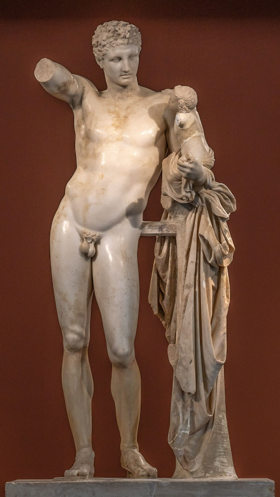
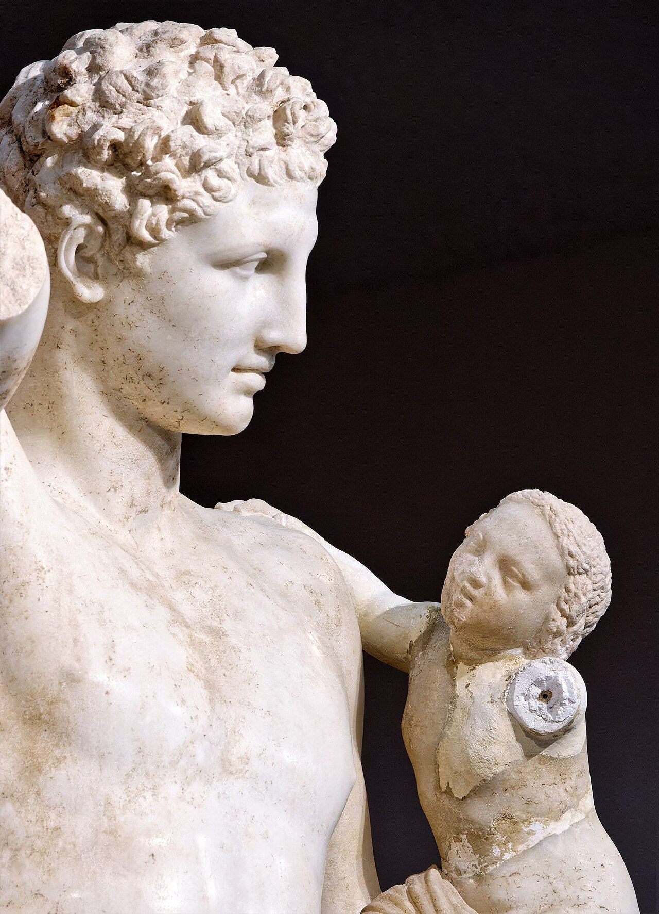

Messenger of the Gods, Guide of Souls, Lord of Roads and Thresholds


Hermes is the god of everything that moves between: messages, merchandise, travellers, thieves, souls. Youngest of the twelve Olympians in most tellings, son of Zeus and the mountain nymph Maia, he is the only god equally at home on Olympus, on the road, and in the underworld. Where other gods rule territories, Hermes rules transitions: the doorway, the crossroads, the border, the moment of death, the closing of a deal, the instant a message passes from one mind into another. The Greeks marked his presence not with grand temples but with herms, square stone pillars at doorways and junctions, because his true shrine is any point where one thing becomes another. He is the patron of heralds, merchants, travellers, athletes, tricksters and diviners, and he is the god the other gods send when something must cross a boundary that nothing else can cross.
The MythsThe Homeric Hymn to Hermes (c. 6th century BC) tells the defining story. Born at dawn in a cave on Mount Kyllene in Arcadia, Hermes is inventing by midday and committing crimes by nightfall. He finds a tortoise outside the cave, kills it, and strings the shell with sheep gut: the first lyre. That evening he slips out, steals fifty cattle belonging to Apollo, and drives them backwards across Greece so their tracks point the wrong way, wearing sandals of woven twigs to disguise his own. He sacrifices two of the animals, dividing the meat into twelve equal portions, one for each of the gods, including, with superb nerve, himself. Then he climbs back into his cradle and puts on the face of a newborn. When Apollo tracks him down, the infant denies everything: he was born yesterday, he says, and cares only for milk and warm baths. Zeus, delighted by the sheer quality of the lying, orders the brothers to reconcile. Hermes gives Apollo the lyre; Apollo, enchanted, gives Hermes the cattle, a golden staff, and a minor form of divination. The hymn is a complete portrait: inventive, charming, dishonest, and somehow, by the end, everyone is better off.
Zeus's mistress Io, transformed into a heifer, was guarded by Argus Panoptes, a giant covered in a hundred eyes, of which only a few ever slept at once. Hera set him as an unsleeping warder. Zeus sent Hermes. Rather than force, Hermes used the tools of his own nature: he sat beside Argus disguised as a herdsman, played the reed pipes, and told stories so long and so soothing that, one by one, all hundred eyes closed. Then he killed him. The deed earned Hermes his most common Homeric epithet, Argeiphontes, slayer of Argus, and it is characteristic that his one great monster-slaying was accomplished not with a sword but with a lullaby.
Hermes' oldest and strangest office is psychopompos, conductor of souls. In the final book of the Odyssey, he wakes the ghosts of the slain suitors with his golden staff and leads them, squeaking like bats, down past the streams of Ocean to the meadow of asphodel. In the Homeric Hymn to Demeter, when Zeus finally orders Persephone released, it is Hermes who drives the chariot down into the underworld and brings her back into the light. In the Iliad, he guides old King Priam through the Greek camp at night, unseen, to beg Achilles for the body of his son. No other Olympian moves freely in the land of the dead. Hermes does, because death is simply the last border, and borders are his.
In Book 10 of the Odyssey, Hermes intercepts Odysseus on the path to Circe's house and gives him moly, a herb with a black root and a white flower that the gods alone can pull from the earth, as protection against her transforming magic. Later it is Hermes who carries Zeus's command to Calypso that she must release Odysseus. Odysseus is in a sense his kin: the hero's grandfather Autolycus, prince of thieves, was Hermes' own son. The cleverest of the Greek heroes has the trickster god in his bloodline, and the god looks after his own.
When Zeus's mortal lover Semele was destroyed by seeing him in his true form, the unborn Dionysus was saved and, once born, needed hiding from Hera. Hermes carried the divine infant to safety, in the best-known version to the nymphs of Mount Nysa. The statue attributed to Praxiteles at Olympia, above, shows exactly this moment: the god of motion caught resting mid-journey, the infant god of ecstasy on his arm.
Epithets and DomainsHis standard epithet in Homer: the cunning that defeats vigilance itself, a hundred eyes closed by a story.
Conductor of the dead to the underworld. The aspect invoked at funerals, and the bridge between the worlds of the living and the dead.
Patron of orators, interpreters and heralds. The Greek word hermeneus, interpreter, was felt to carry his name; it survives in "hermeneutics".
God of commerce, negotiation and the profitable exchange. Merchants kept his image in the agora of most Greek cities.
The patron of thieves and the shifty edge of every deal. The Greeks did not pretend this aspect away; they gave it a name and watched their purses.
Protector of flocks, shown carrying a ram on his shoulders. Pausanias records the cult at Tanagra, where the god was said to have averted a plague by carrying a ram around the city walls.
Patron of athletes and the gymnasium. His festivals, the Hermaia, were athletic games for boys and young men.
His birthplace in Arcadia and his oldest cult centre.
The underworld aspect, invoked in funerary inscriptions and in binding rituals; offerings to the dead were often addressed through him.
Not a classical Greek cult title: this is the later Greco-Egyptian fusion of Hermes with the god Thoth, from which the Hermetic tradition of Western magic and alchemy descends. Post-classical, but the single most consequential of his afterlives for the Western esoteric tradition.
In Jungian terms Hermes personifies three interlocking patterns: the Trickster, the Messenger, and the Guide of Souls. Jung wrote directly about the first in his essay on the trickster figure, and treated Mercurius, Hermes' alchemical descendant, as an image of the unconscious itself: fluid, duplex, impossible to pin down, and indispensable to transformation. James Hillman went further and claimed Hermes as the patron of psychology as such, since the discipline is, literally, hermeneutic: it carries messages between the underworld of the psyche and the daylight of awareness. Jean Shinoda Bolen, in Gods in Everyman, draws the portrait at the level of personality: the Hermes man is the communicator and connector, quick-witted, persuasive, friend to everyone and bound to no one, forever in motion between projects, places and people.
The light expression of the archetype is genuinely luminous. Hermes consciousness is what translates between worlds that cannot otherwise speak to each other: technical and human, conscious and unconscious, old and young, living and dead. It improvises, finds the gap, sees the deal that leaves both sides better off (Apollo genuinely preferred the lyre to his cattle). It is at ease in transition and unafraid of the dark; it goes into the underworld and comes back. In a psyche, it appears as humour, verbal agility, the capacity to reframe, and the instinct for the right word at the right threshold moment.
The shadow is the same energy with the ethics removed and the landing refused. It lies fluently, and, more dangerously, lies to itself. It charms rather than commits; it is the eternal adolescent, Hillman's puer aeternus, whose life is all doorways and no rooms. It steals: credit, ideas, other people's time. It substitutes speed for depth, cleverness for wisdom, movement for growth. Where the light aspect mediates, the shadow manipulates; the messenger becomes the spin doctor, the guide of souls becomes the con man who knows exactly where you are vulnerable. The tell, in Bolen's terms, is what happens when things get slow, boring or binding: the Hermes shadow is already gone.
In Modern LifeHermes is the presiding god of the modern economy. Messaging, markets, logistics, translation, media, networking: nearly everything a smartphone does is in his portfolio. Which makes his human carriers easy to find.
In the workplace he is the connector and translator: the person who knows someone in every department, who can explain engineering to sales and sales to engineering, who is at their best in negotiations, launches, pivots and integrations, and at their worst in month eleven of a routine delivery schedule. Hermes people excel wherever value is created by linking things rather than building them: deal-making, consulting, recruitment, communications, early-stage founding. As leaders they are superb in transitions (turnarounds, mergers, change programmes) and reliably struggle with the maintenance phase that follows; a Hermes leader without a steady, structured lieutenant tends to leave behind a trail of brilliant, half-embedded initiatives. In coaching terms, the developmental edge is nearly always the same: staying put after the excitement ends, letting a commitment bind, discovering that depth is not a trap.
In relationships the pattern is charm with an exit path: fully present, delightfully attentive, and somehow never quite pinned down. The shadow question for anyone with a strong Hermes pattern, in love or work, is not "can you move?" but "can you stay?"
And he has a specific relevance to divinatory practice. Hermes is the god of the meaningful coincidence, of the message that arrives sideways: the overheard remark, the drawn lot, the card that lands face up. Divination by lots and by chance words was his attested province in the ancient world, and the diviner's essential skill, holding the threshold open without forcing the message, is Hermes consciousness in its most disciplined form.
CorrespondencesMercury. The Greeks knew the planet as the star of Hermes; the identification is ancient and secure.
Wednesday (Latin dies Mercurii). From the Hellenistic planetary week, late antiquity: astrological convention rather than classical cult practice.
The fourth. The Homeric Hymn places his birth on the fourth of the month, and fourth-day observances for Hermes are attested in Greek calendar custom.
Orange, yellow, quicksilver grey. Modern convention: no colour is securely attested for him in ancient cult.
The kerykeion (caduceus: herald's staff with twin serpents), winged sandals (talaria), the traveller's hat (petasos), the herm, the tortoiseshell lyre, the purse (Roman-era Mercury iconography).
The tortoise (the lyre), the cockerel (classical votive iconography), the ram (the Kriophoros cult at Tanagra).
Moly is his mythic herb (Odyssey 10), though it is divine and unidentifiable. Most plant lists in modern books are recent convention; treat them as such. The crocus and strawberry tree appear in modern Hellenic practice without strong ancient attestation.
Frankincense (specified in the Orphic Hymn to Hermes), honey and honey cakes, wine libations. Tongues of sacrificial animals were his herald's portion in some rites. Modern practice commonly adds coins and keys; these are contemporary conventions.
The Hermaia: athletic festivals for boys and young men, held at gymnasia across the Greek world. Monthly observance on the fourth.
Mount Kyllene in Arcadia (birthplace); Pheneus, which Pausanias names among his chief seats; Tanagra (the ram-bearer); and the herms at Athenian doorways, crossroads and the agora.
A detail worth knowing for divination: Pausanias (7.22) describes the oracle of Hermes Agoraios at Pharai in Achaea. The enquirer whispered the question into the statue's ear, stopped their own ears, walked away, and took the first words they heard on unstopping them as the god's answer. Chance speech, received at a threshold, as oracle: this is kleromancy's close cousin and the most direct ancient model for Hermetic divination by everyday sign.
Zeus and Maia, eldest of the Pleiades, daughter of the Titan Atlas
No wife; many liaisons. Children include Pan (by a nymph; the Homeric Hymn to Pan names Hermes as father), Hermaphroditus (by Aphrodite), and Autolycus, prince of thieves and grandfather of Odysseus
Apollo, his brother, after the cattle affair: the lyre for the staff. Zeus, whose voice he carries. Perseus and Odysseus, mortals he equipped and guided
Hera, opposed in the Io affair. Argus Panoptes, his one great slaying. Apollo, briefly, as the wronged party of his first day alive
Hermes was born of the generation after the Titanomachy, into a settled Olympian order he never once tried to overturn. It is worth noticing: the god of thieves and tricks is also, in the end, the most reliable servant of the cosmic order. He bends every rule and breaks none of the ones that matter. That, too, is a lesson in how the boundary-crosser survives.